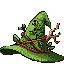

 The Plant Wizard

Discover our unique library for plant care. Free to use and a great resource for plant enthusiasts of all levels. Whether you're a beginner or a seasoned plant parent, our library has something for everyone. From detailed care guides to troubleshooting tips, we provide the information you need to help your plants thrive.
What is Zdog?

There's a rule in our house. When you're feeling down, tired, and been sitting on the couch too long, there's one common phrase. "Get Outside". It doesn't matter how, riding a bike, taking a hike, camping, gardening, or simply sitting on the porch and soaking it all in. Zdog Outdoors is a collection of my outdoor adventures, tips, and tricks. From hiking trails to camping spots, home gardening, and multi day adventures, I share my experiences and insights to inspire others to explore the great outdoors. Our name is inspired by the love for our dog Ziggy. A lover of fetch and a friend to all, Ziggy's playful attitude, could be forever remembered and inspired a fun and adventurous spirit.
🎬 Zdog Outdoors
Check out my latest outdoor adventures!
Mike's 57 Chevy
Current River Float Trip
Relaxing Wind in the Pines